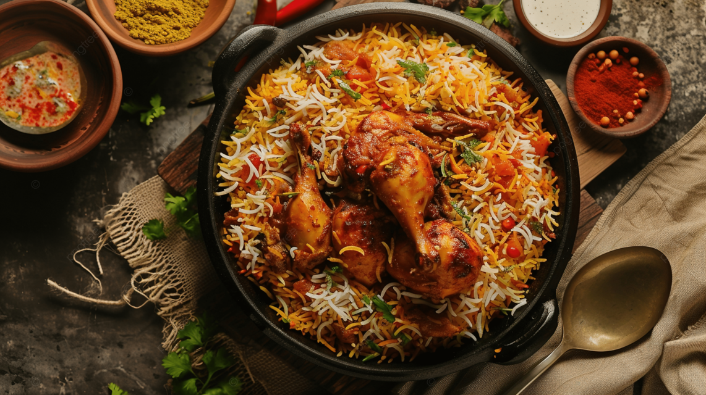
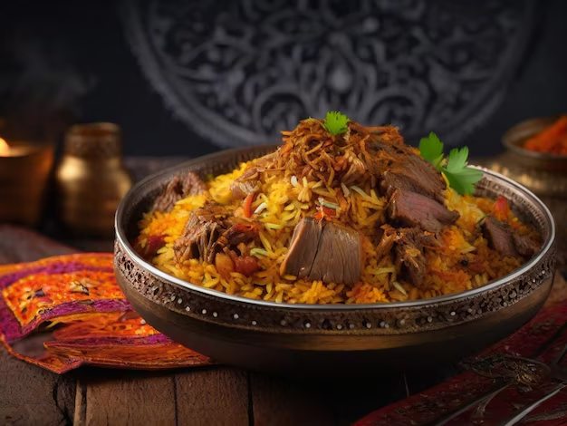
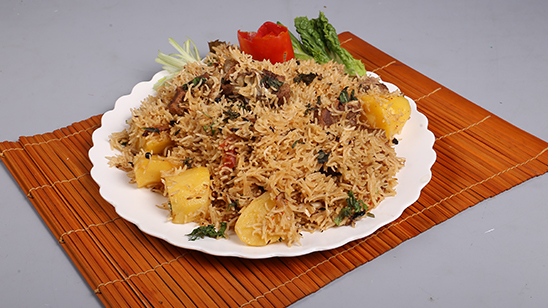

Aromatic basmati rice cooked with tender pieces of chicken, infused with a blend of traditional spices, and garnished with fried onions and fresh coriander, offering a flavorful and wholesome dining experience.
Succulent mutton pieces marinated in yogurt and spices, layered with fragrant basmati rice, and slow-cooked to perfection, creating a rich and hearty biryani that embodies the essence of Pakistani culinary tradition.

Tender beef chunks simmered with a medley of spices and herbs, layered with long-grain basmati rice, and cooked until each grain is infused with the robust flavors of the meat, presenting a satisfying and aromatic dish.
Tender beef pieces cooked with fragrant basmati rice and a blend of aromatic spices, creating a comforting and flavorful dish where each grain of rice is infused with the essence of the meat, offering a satisfying and hearty meal.
A classic Indian and Pakistani sweet delicacy, Gulab Jamun consists of soft, deep-fried milk solids (khoya) balls soaked in a sugary syrup, providing a delightful end to a savory meal with its rich, syrupy texture and indulgent sweetness.